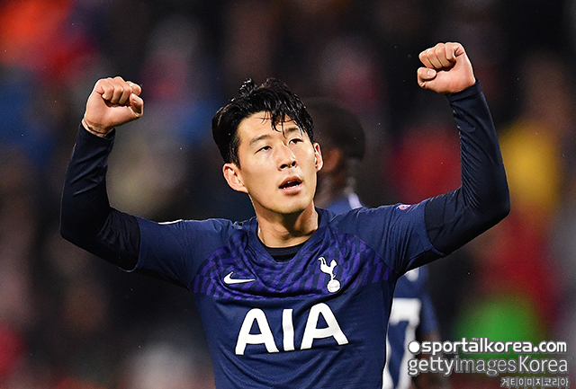

[스포탈코리아] 김성진 기자= 코로나19로 전 세계 선수들의 몸값이 대폭 하락했다.
[스포탈코리아] 김성진 기자= 코로나19로 전 세계 선수들의 몸값이 대폭 하락했다. 그런데도 손흥민(28, 토트넘 홋스퍼)은 여전히 잉글랜드 프리미어리그(EPL) 톱 클래스의 가치를 인정받았다.
독일 ‘트랜스퍼마르크트’는 8일 현재 전 세계를 강타한 코로나19 악재를 반영한 선수들의 가치를 업데이트했다. 모든 선수가 10~20%씩 가치가 하락했다. 손흥민도 마찬가지였다.
손흥민은 조정 전까지 7,200만 파운드를 기록했으나 이번 조정으로 5,760만 파운드(약 872억원)를 기록했다. 손흥민이 지난해 3월 5,850만 파운드를 기록했으니 코로나19로 1년 전 가치로 돌아간 셈이다.
손흥민의 가치가 떨어졌지만 다른 선수들도 동반 하락했다. 그래서 EPL 내에서 손흥민의 가치는 여전히 정상급이다. 전체 순위로 따지면 공동 6위다. 손흥민은 마커스 래시포드(맨체스터 유나이티드), 델레 알리(토트넘 홋스퍼), 로드리(맨체스터 시티), 앤드류 로버트슨(리버풀) 등과 같은 가치로 평가됐다.
EPL 선수 가치 1위는 라힘 스털링(맨체스터 시티)으로 1억 1,520만 파운드(약 1,743억원)였다. 케빈 더 브라위너(맨체스터 시티), 모하메드 살라(리버풀), 사디오 마네(리버풀), 해리 케인(토트넘 홋스퍼)는 공동 2위로 1억 800만 파운드(약 1,634억원)의 가치가 평가됐다.
▲ 잉글랜드 프리미어리그 선수 가치 순위
사진=게티이미지코리아
보도자료 및 취재문의 W3C
그런데도 손흥민(28, 토트넘 홋스퍼)은 여전히 잉글랜드 프리미어리그(EPL) 톱 클래스의 가치를 인정받았다.